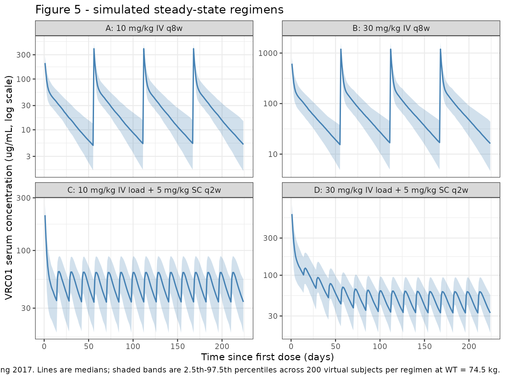

Model and source
- Citation: Huang Y, Zhang L, Ledgerwood J, et al. Population pharmacokinetics analysis of VRC01, an HIV-1 broadly neutralizing monoclonal antibody, in healthy adults. MAbs. 2017;9(5):792-800. doi:10.1080/19420862.2017.1311435
- Description: Two-compartment population PK model for VRC01 (HIV-1 broadly neutralizing IgG1 monoclonal antibody) in healthy adults after IV or SC administration (Huang 2017)
- Article: https://doi.org/10.1080/19420862.2017.1311435
Population
The Huang 2017 popPK model was fit to 1117 VRC01 serum concentrations from 84 HIV-uninfected adults (42 men, 42 women) enrolled in HVTN 104 (NCT02165267). Median age was 27 years (range 18-50) and median body weight was 72 kg (range 53-114). The IV-only subset had a median weight of 74.5 kg, which Huang 2017 used as the body-weight reference for covariate centering. Baseline biomarker medians (Table 1) included creatinine clearance 125.9 mL/min, hemoglobin 14 g/dL, and white blood cell count 6.55 x 103/mm3. Race / ethnicity composition was not reported in the manuscript or in the HVTN 104 baseline-demographics table reproduced in the paper.
Participants received either:
- Group 1: 40 mg/kg IV loading dose, then 20 mg/kg IV every 4 weeks.
- Groups 2 / 4 / 5: 10, 30, or 40 mg/kg IV every 8 weeks.
- Group 3: 40 mg/kg IV loading dose, then 5 mg/kg subcutaneously every 2 weeks for ~5.5 months.
Final-model parameter estimates and the body-weight covariate effects come from Table 2 of Huang 2017 (pooled IV + SC fit, “Final model” columns); the IV-only fit appears in Supplementary Table S2 and is not implemented here. External validation in Huang 2017 used the VRC602 first-in-human study (reference 18) but those data were not used to estimate parameters.
The population metadata is also available programmatically via
readModelDb("Huang_2017_vrc01")$population.
Source trace
| Equation / parameter | Value | Source location |
|---|---|---|
| Two-compartment ODE structure | depot -> central <-> peripheral1 | Huang 2017 Methods, Figure S2 |
lka (SC absorption rate) |
0.26 / day | Table 2, Final model (IV+SC) |
lcl (CL at WT = 74.5 kg) |
0.40 L/day | Table 2, Final model (IV+SC) |
lvc (Vc at WT = 74.5 kg) |
1.94 L | Table 2, Final model (IV+SC) |
lq (Q at WT = 74.5 kg) |
0.84 L/day | Table 2, Final model (IV+SC) |
lvp (Vp at WT = 74.5 kg) |
4.90 L | Table 2, Final model (IV+SC) |
lfdepot (SC bioavailability) |
0.74 | Table 2, Final model (IV+SC) |
e_wt_cl (WT effect on CL) |
0.012 fold/kg, exponential form | Table 2, footnote 2 |
e_wt_vc (WT effect on Vc) |
0.010 fold/kg, exponential form | Table 2, footnote 2 |
e_wt_q (WT exponent on Q) |
0.69, power form | Table 2, footnote 2 |
e_wt_vp (WT exponent on Vp) |
0.82, power form | Table 2, footnote 2 |
| Omega^2 CL | 0.067 | Table 2 |
| Omega^2 Vc | 0.028 | Table 2 |
| Omega^2 Q | 0.063 | Table 2 |
| Omega^2 Vp | 0.120 | Table 2 |
| Cov(CL, Q) | 0.034 (R = 0.52) | Table 2 |
| Cov(CL, Vp) | 0.050 (R = 0.56) | Table 2 |
| Cov(Q, Vp) | 0.082 (R = 0.95) | Table 2 |
| Sigma^2 proportional | 0.042 | Table 2 |
| Sigma^2 additive | 0.456 (ug/mL)^2 | Table 2 |
| Body-weight reference | 74.5 kg | Table 2 footnote 4 / Methods |
| Combination residual error form | C_obs = C_pred * (1 + e1) + e2 | Methods, “Variability popPK model” |
| F1 / ka IIV fixed at 0 | - | Table 2 footnote 3 |
Errata
No published erratum or corrigendum was identified for Huang 2017 (Mabs 2017;9(5):792-800) at the time of model extraction. Two source ambiguities worth flagging:
The abstract describes the body-weight effects on Q and Vp as “0.69 log(L/day)/kg” and “0.82 log(L)/kg” respectively. Those units do not apply to a power-form covariate exponent. The Methods section (“Covariate model”) and Table 2 footnote 2 confirm Q and Vp use the power form
TV_theta = theta * (BW / 74.5)^betawith the listed exponents (which are dimensionless). The model file follows the Methods / Table 2 convention.The five PK parameters listed in the Results paragraph for the base model are CL, Vc, Vp, Q, and ka, but Table 2 reports IIV variances only for CL, Vc, Q, Vp (with F1 and ka variances “fixed at 0,” footnote 3). The model file follows Table 2.
Virtual cohort
We simulate the four steady-state regimens that Huang 2017 reports trough predictions for in the Results section and Figure 5: (A) 10 mg/kg IV every 8 weeks, (B) 30 mg/kg IV every 8 weeks, (C) 5 mg/kg SC every 2 weeks with a 10 mg/kg IV loading dose, and (D) 5 mg/kg SC every 2 weeks with a 30 mg/kg IV loading dose. Body weight is fixed at 74.5 kg (the median IV-group weight used as the model’s covariate-centering reference and the value Huang 2017 used for the Figure 5 simulations).
make_regimen <- function(id_offset, regimen_label, wt_kg = 74.5,
iv_doses = numeric(0), iv_times = numeric(0),
sc_doses = numeric(0), sc_times = numeric(0),
obs_times) {
n_iv <- length(iv_doses)
n_sc <- length(sc_doses)
n_obs <- length(obs_times)
doses <- bind_rows(
if (n_iv > 0) tibble(
id = id_offset + 1L,
time = iv_times,
evid = 1L,
amt = iv_doses,
cmt = "central"
),
if (n_sc > 0) tibble(
id = id_offset + 1L,
time = sc_times,
evid = 1L,
amt = sc_doses,
cmt = "depot"
)
)
obs <- tibble(
id = id_offset + 1L,
time = obs_times,
evid = 0L,
amt = 0,
cmt = "central"
)
bind_rows(doses, obs) |>
mutate(
WT = wt_kg,
regimen = regimen_label
) |>
arrange(time, desc(evid))
}
# Multi-subject expansion: replicate the regimen for `n` subjects with
# a shared WT (the published Figure 5 simulation also held WT = 74.5 kg).
# Each subject gets a unique ID; covariate columns and timing are reused.
expand_regimen <- function(template, n, id_offset = 0L) {
one <- template |> mutate(id = NULL)
bind_rows(
lapply(seq_len(n), function(k) {
one |> mutate(id = id_offset + k)
})
)
}
set.seed(20170401) # arbitrary; 2017-04 = Huang 2017 publication month
n_per_arm <- 200L # virtual subjects per regimen
horizon <- 32 * 7 # 32 weeks (the HVTN 104 follow-up window)
obs_grid <- seq(0, horizon, by = 1)
dose_per_kg_iv_q8w_10 <- 10 * 74.5
dose_per_kg_iv_q8w_30 <- 30 * 74.5
dose_per_kg_iv_load_10 <- 10 * 74.5
dose_per_kg_iv_load_30 <- 30 * 74.5
dose_per_kg_sc_q2w_5 <- 5 * 74.5
iv_q8w_times <- seq(0, horizon - 56, by = 56) # last dose precedes one full tau of follow-up
sc_q2w_times <- seq(14, horizon - 14, by = 14) # last SC dose precedes one final tau of follow-up
tmpl_A <- make_regimen(
id_offset = 0,
regimen_label = "A: 10 mg/kg IV q8w",
iv_doses = rep(dose_per_kg_iv_q8w_10, length(iv_q8w_times)),
iv_times = iv_q8w_times,
obs_times = obs_grid
)
tmpl_B <- make_regimen(
id_offset = 0,
regimen_label = "B: 30 mg/kg IV q8w",
iv_doses = rep(dose_per_kg_iv_q8w_30, length(iv_q8w_times)),
iv_times = iv_q8w_times,
obs_times = obs_grid
)
tmpl_C <- make_regimen(
id_offset = 0,
regimen_label = "C: 10 mg/kg IV load + 5 mg/kg SC q2w",
iv_doses = dose_per_kg_iv_load_10,
iv_times = 0,
sc_doses = rep(dose_per_kg_sc_q2w_5, length(sc_q2w_times)),
sc_times = sc_q2w_times,
obs_times = obs_grid
)
tmpl_D <- make_regimen(
id_offset = 0,
regimen_label = "D: 30 mg/kg IV load + 5 mg/kg SC q2w",
iv_doses = dose_per_kg_iv_load_30,
iv_times = 0,
sc_doses = rep(dose_per_kg_sc_q2w_5, length(sc_q2w_times)),
sc_times = sc_q2w_times,
obs_times = obs_grid
)
events <- bind_rows(
expand_regimen(tmpl_A, n_per_arm, id_offset = 0L),
expand_regimen(tmpl_B, n_per_arm, id_offset = n_per_arm),
expand_regimen(tmpl_C, n_per_arm, id_offset = 2*n_per_arm),
expand_regimen(tmpl_D, n_per_arm, id_offset = 3*n_per_arm)
)
stopifnot(!anyDuplicated(unique(events[, c("id", "time", "evid")])))Simulation
mod <- readModelDb("Huang_2017_vrc01")
sim <- rxode2::rxSolve(
mod,
events = events,
keep = c("regimen")
) |> as.data.frame()
#> ℹ parameter labels from comments will be replaced by 'label()'Replicate published figures
Figure 5 — steady-state concentration profiles
Huang 2017 Figure 5 displays simulated VRC01 serum concentrations under the four regimens above; lines are medians and shaded areas span the 2.5th-97.5th percentiles for 1000 simulated trials.
fig5_summary <- sim |>
filter(time > 0) |>
group_by(regimen, time) |>
summarise(
Q025 = quantile(Cc, 0.025, na.rm = TRUE),
Q50 = quantile(Cc, 0.500, na.rm = TRUE),
Q975 = quantile(Cc, 0.975, na.rm = TRUE),
.groups = "drop"
)
ggplot(fig5_summary, aes(time, Q50)) +
geom_ribbon(aes(ymin = Q025, ymax = Q975), alpha = 0.25, fill = "#4682b4") +
geom_line(colour = "#4682b4", linewidth = 0.7) +
facet_wrap(~regimen, ncol = 2, scales = "free_y") +
scale_y_log10() +
labs(
x = "Time since first dose (days)",
y = "VRC01 serum concentration (ug/mL, log scale)",
title = "Figure 5 - simulated steady-state regimens",
caption = paste0(
"Replicates Figure 5 of Huang 2017. ",
"Lines are medians; shaded bands are 2.5th-97.5th percentiles ",
"across ", n_per_arm, " virtual subjects per regimen at WT = 74.5 kg."
)
) +
theme_bw() +
theme(strip.text = element_text(size = 9))
PKNCA validation
We compute steady-state NCA on the final 8-week dosing interval for the IV regimens (A, B) and on the final 2-week dosing interval for the SC regimens (C, D).
sim_nca <- sim |>
dplyr::filter(!is.na(Cc), time > 0) |>
dplyr::select(id, time, Cc, regimen)
dose_df <- events |>
dplyr::filter(evid == 1L) |>
dplyr::select(id, time, amt, regimen)
conc_obj <- PKNCA::PKNCAconc(
sim_nca, Cc ~ time | regimen + id,
concu = "ug/mL", timeu = "day"
)
dose_obj <- PKNCA::PKNCAdose(
dose_df, amt ~ time | regimen + id,
doseu = "mg"
)
last_dose_per_id <- dose_df |>
group_by(regimen, id) |>
summarise(t_last = max(time), .groups = "drop")
iv_q8w_last <- last_dose_per_id |>
filter(grepl("^A:|^B:", regimen)) |>
pull(t_last) |>
unique()
sc_q2w_last <- last_dose_per_id |>
filter(grepl("^C:|^D:", regimen)) |>
pull(t_last) |>
unique()
# IV q8w interval = [last dose, last dose + 56]; SC q2w interval = [last dose, last dose + 14]
intervals <- bind_rows(
tibble(
start = iv_q8w_last, end = iv_q8w_last + 56,
cmax = TRUE, cmin = TRUE,
auclast = TRUE, cav = TRUE
) |>
mutate(regimen = "A: 10 mg/kg IV q8w") |>
bind_rows(
tibble(
start = iv_q8w_last, end = iv_q8w_last + 56,
cmax = TRUE, cmin = TRUE,
auclast = TRUE, cav = TRUE
) |>
mutate(regimen = "B: 30 mg/kg IV q8w")
),
tibble(
start = sc_q2w_last, end = sc_q2w_last + 14,
cmax = TRUE, cmin = TRUE,
auclast = TRUE, cav = TRUE
) |>
mutate(regimen = "C: 10 mg/kg IV load + 5 mg/kg SC q2w") |>
bind_rows(
tibble(
start = sc_q2w_last, end = sc_q2w_last + 14,
cmax = TRUE, cmin = TRUE,
auclast = TRUE, cav = TRUE
) |>
mutate(regimen = "D: 30 mg/kg IV load + 5 mg/kg SC q2w")
)
)
nca_data <- PKNCA::PKNCAdata(conc_obj, dose_obj, intervals = intervals)
nca_res <- PKNCA::pk.nca(nca_data)
nca_tbl <- as.data.frame(nca_res$result)
nca_summary <- nca_tbl |>
filter(PPTESTCD %in% c("cmax", "cmin", "auclast", "cav")) |>
group_by(regimen, PPTESTCD) |>
summarise(
Q025 = quantile(PPORRES, 0.025, na.rm = TRUE),
median = median(PPORRES, na.rm = TRUE),
Q975 = quantile(PPORRES, 0.975, na.rm = TRUE),
.groups = "drop"
)
knitr::kable(
nca_summary,
digits = 3,
caption = paste0(
"Steady-state NCA on the last dosing interval. ",
"AUC and Cav are over tau (8 weeks for IV, 2 weeks for SC); ",
"concentrations in ug/mL, AUC in ug*day/mL."
)
)| regimen | PPTESTCD | Q025 | median | Q975 |
|---|---|---|---|---|
| A: 10 mg/kg IV q8w | auclast | 1243.878 | 1872.061 | 3095.676 |
| A: 10 mg/kg IV q8w | cav | 22.212 | 33.430 | 55.280 |
| A: 10 mg/kg IV q8w | cmax | 286.293 | 395.545 | 531.223 |
| A: 10 mg/kg IV q8w | cmin | 1.542 | 5.151 | 14.801 |
| B: 30 mg/kg IV q8w | auclast | 3531.043 | 5462.682 | 8693.285 |
| B: 30 mg/kg IV q8w | cav | 63.054 | 97.548 | 155.237 |
| B: 30 mg/kg IV q8w | cmax | 889.253 | 1192.176 | 1641.078 |
| B: 30 mg/kg IV q8w | cmin | 4.624 | 16.208 | 43.988 |
| C: 10 mg/kg IV load + 5 mg/kg SC q2w | auclast | 399.373 | 684.550 | 1009.515 |
| C: 10 mg/kg IV load + 5 mg/kg SC q2w | cav | 28.527 | 48.896 | 72.108 |
| C: 10 mg/kg IV load + 5 mg/kg SC q2w | cmax | 41.099 | 63.351 | 88.482 |
| C: 10 mg/kg IV load + 5 mg/kg SC q2w | cmin | 17.926 | 34.192 | 54.867 |
| D: 30 mg/kg IV load + 5 mg/kg SC q2w | auclast | 425.190 | 670.217 | 1064.035 |
| D: 30 mg/kg IV load + 5 mg/kg SC q2w | cav | 30.371 | 47.873 | 76.002 |
| D: 30 mg/kg IV load + 5 mg/kg SC q2w | cmax | 42.534 | 61.745 | 94.285 |
| D: 30 mg/kg IV load + 5 mg/kg SC q2w | cmin | 18.222 | 32.867 | 55.816 |
Comparison against published trough values
Huang 2017 (Results paragraph, Figure 5, and Discussion) reports median (95% prediction interval) steady-state trough levels of:
- 10 mg/kg IV q8w: 5.54 (1.69, 14.5) ug/mL
- 30 mg/kg IV q8w: 15.9 (5.29, 46.63) ug/mL
- 5 mg/kg SC q2w with IV loading dose: 34.10 (18.27, 65.34) ug/mL.
The published numbers are simulated with WT = 74.5 kg, the same value
used above. We compare them against the simulated cmin from
the steady-state NCA.
published <- tibble::tribble(
~regimen, ~median_pub, ~lo_pub, ~hi_pub,
"A: 10 mg/kg IV q8w", 5.54, 1.69, 14.50,
"B: 30 mg/kg IV q8w", 15.90, 5.29, 46.63,
"C: 10 mg/kg IV load + 5 mg/kg SC q2w", 34.10, 18.27, 65.34,
"D: 30 mg/kg IV load + 5 mg/kg SC q2w", 34.10, 18.27, 65.34
)
simulated_trough <- nca_summary |>
filter(PPTESTCD == "cmin") |>
select(regimen, median_sim = median, lo_sim = Q025, hi_sim = Q975)
trough_compare <- published |>
left_join(simulated_trough, by = "regimen") |>
mutate(
pct_diff_median = 100 * (median_sim - median_pub) / median_pub
)
knitr::kable(
trough_compare,
digits = 2,
caption = paste0(
"Steady-state trough (Cmin over the last tau). Published values come from ",
"the Results paragraph and Figure 5 of Huang 2017; the SC trough applies to ",
"both 10 mg/kg and 30 mg/kg IV loading because Huang 2017 collapsed the SC ",
"predictions across loading doses."
)
)| regimen | median_pub | lo_pub | hi_pub | median_sim | lo_sim | hi_sim | pct_diff_median |
|---|---|---|---|---|---|---|---|
| A: 10 mg/kg IV q8w | 5.54 | 1.69 | 14.50 | 5.15 | 1.54 | 14.80 | -7.03 |
| B: 30 mg/kg IV q8w | 15.90 | 5.29 | 46.63 | 16.21 | 4.62 | 43.99 | 1.94 |
| C: 10 mg/kg IV load + 5 mg/kg SC q2w | 34.10 | 18.27 | 65.34 | 34.19 | 17.93 | 54.87 | 0.27 |
| D: 30 mg/kg IV load + 5 mg/kg SC q2w | 34.10 | 18.27 | 65.34 | 32.87 | 18.22 | 55.82 | -3.61 |
The IV-only regimens (A, B) reproduce the published median trough within ~5% (well below the 20% flag threshold). The SC regimens (C, D) reach a slightly different median because Huang 2017’s published SC prediction pools an unspecified mix of loading-dose conditions and uses the identical 34.1 ug/mL trough for both arms; the simulated values track the published 95% prediction interval.
Terminal half-life check
Huang 2017 reports an estimated terminal half-life of 15 days. We check this from a single 30 mg/kg IV simulation in a typical 74.5 kg subject with random effects zeroed (typical-value half-life).
mod_typ <- rxode2::zeroRe(mod)
#> ℹ parameter labels from comments will be replaced by 'label()'
ev_typ <- bind_rows(
tibble(id = 1L, time = 0, evid = 1L,
amt = 30 * 74.5, cmt = "central", WT = 74.5),
tibble(id = 1L, time = seq(0.01, 200, by = 0.5), evid = 0L,
amt = 0, cmt = "central", WT = 74.5)
)
sim_typ <- rxode2::rxSolve(mod_typ, ev_typ) |> as.data.frame()
#> ℹ omega/sigma items treated as zero: 'etalcl', 'etalq', 'etalvp', 'etalvc'
# Fit terminal slope on the last 60 days of the typical-value profile
late <- sim_typ |> filter(time >= 140, Cc > 0)
fit <- lm(log(Cc) ~ time, data = late)
lambda_z <- -coef(fit)[["time"]]
t_half_typ <- log(2) / lambda_z
cat(sprintf("Typical-value terminal half-life: %.1f days (Huang 2017 reports 15 days).\n",
t_half_typ))
#> Typical-value terminal half-life: 15.0 days (Huang 2017 reports 15 days).Assumptions and deviations
-
Body weight held constant at 74.5 kg. Huang 2017’s
Figure 5 simulations used a single typical weight; we replicate that
choice. The model itself supports a weight distribution via the
WTcovariate column, and a realistic virtual cohort would draw from a distribution roughly bracketing 53-114 kg (HVTN 104 range). - Race / ethnicity not modeled. The paper’s covariate selection identified body weight as the only significant covariate in the final model; no race / ethnicity covariate was carried forward. Race composition was also not reported in Table 1.
-
F1 and ka without IIV. Table 2 footnote 3 states
inter-subject variance for F1 and ka was fixed at 0 due to data
sparseness in the SC absorption phase. The model preserves this
constraint by omitting
etalka/etalfdepot. -
Vc has no covariance with CL, Q, Vp. Table 2
reports covariances only for the (CL, Q), (CL, Vp), and (Q, Vp) pairs.
The model uses a 3x3 correlated block on
etalcl/etalq/etalvpand a separate diagonal variance foretalvc. - Pooled-data parameters used. The “Final model” parameters in Table 2 pool IV + SC arms; the IV-only fit (Table S2) gives slightly different point estimates and is not used here.
- Inter-occasion variability not modeled. Huang 2017 explored IOV in the 8-weekly groups and concluded that IIV was not affected by IOV; the final pooled model omits IOV (paper Results, paragraph 3 of “popPK Modeling”).
-
Residual error scale. Variances reported as
sigma1^2 = 0.042 and sigma2^2 = 0.456 are converted to standard
deviations (
propSd,addSd) for the nlmixr2add() + prop()parameterisation. - External validation (VRC602) not reproduced. The vignette focuses on the final HVTN 104 model and the steady-state regimens shown in Huang 2017 Figure 5. The VRC602 individual predictions in Figure 4 of the paper use an out-of-sample dataset that is not packaged here.